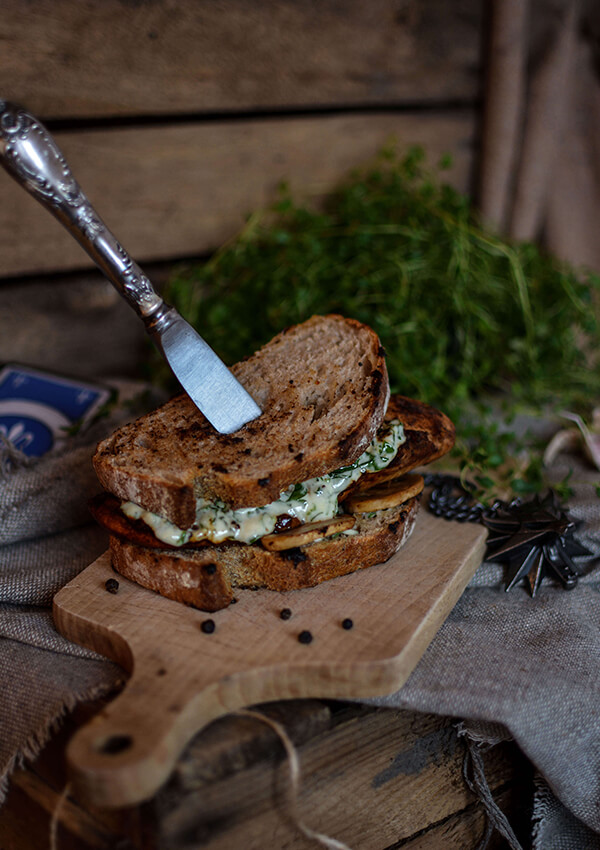

CHICKEN SANDWICH
Description
Chicken sandwich appears already in the first part of the virtual adventures of Geralt of Rivia, and it makes a serious comeback in Witcher 3: The Wild Hunt, where it’s a quite common consumable - you can buy it at the innkeeper or find in boxes or .... loot it from fallen enemies. This snack slowly restores health in case of no other options. In addition, we can also find the version with roasted chicken. Because it appears almost everywhere during our journey, the sandwich has become one of the most famous food item from the game.
As famous and useful item during the game, this dish requires a proper treatment. It is impossible to imagine the Witcher’s universe without a lot of liquors - there are several types of alcohol in the game, so we will use Kaedweni Stout with a strong smoky aroma for a chicken marinade. We will also add grilled mushrooms and sauce with chopped parsley to finally close everything in rustic slices of sourdough bread.
Such a sandwich makes an ideal regeneration snack for keeping the vital strength during long hours of fierce gameplay!
Ingredients
- chicken breast - 350g
- mushrooms - 100g
- rye bread - 4 slices
- rapeseed oil - 1 tablespoon
- mayonnaise - 3 tablespoons
- parsley - handful
- lemon juice - 1 tablespoon
- salt, pepper
- dark beer, stout type - 200 ml
- garlic - 2 cloves
- spicy mustard - 1 tablespoon
- honey - 1-2 teaspoons
- lemon juice from half a lemon
- sweet paprika powder - ½ teaspoon
- salt, pepper
SAUCE:
MARINADE:
Steps
-
MARINADE
Put the ingredients for the marinade into the saucepan (press garlic through the press) and mix thoroughly to combine. As for the choice of beer, it may be a stout, but also a sweet dark beer - then you have to try marinade before adding honey, so that it does not come out too sweet. Put the marinade on a very strong fire and cook to reduce the excess water - a sauce must have a density similar to the roast sauce. It should take about 15-20 minutes. Cool the ready marinade to room temperature and after that, coat cleaned chicken breasts with the marinade and put in the fridge for at least 1 hour.
-
SAUCE
Combine together mayonnaise, lemon juice, finely chopped parsley and a pinch of pepper and salt. Put the sauce in the fridge.
-
GRILLING THE MEAT
Frying pan version: Place the marinated meat on a hot, greased pan (preferably grill pan). Fry the fillets for about 4 minutes on medium heat, then turn them on the other side and fry for another 5 minutes. Additionally, fry each side for 30 seconds, gently holding the meat with tongs. At the end of frying, add a few tablespoons of water (it will sizzle and smoke) and shake the pan. Then cover it with a lid, reduce the gas to a minimum, stew for 1 min and turn off the burner. Pull the chicken out and transfer it to the plate.
Barbecue version: In the case of a traditional outdoor barbecue, the meat should be prepared with usage of trays. Grill marinated fillets for approx. 15 minutes, occasionally turning them over and spreading the remains of the marinade. When meat is properly browned, put it on the side of the grate (so that it's not directly above the burning coal) and leave for about 1-2 min of rest. Then transfer it on the plate.
-
GRILLING OF MUSHROOMS AND BREAD
On the same pan or grill, quickly grill the mushrooms, cut into thick slices (about 1 minute on each side), and finally sprinkle them lightly with salt and coarsely ground pepper. Remove the mushrooms from the pan / grill and toast the slices of bread, also about 1 minute on each side.
-
SERVING
Spread sauce on a slice of toasted bread, add grilled mushrooms and chicken breast, put on a second slice and also spread with sauce. Lightly press the sandwich with your hand (to make it more convenient to eat) and celebrate the Witcher meal!
We are sure that the meat in such a tasty beer marinade would please Geralt! We recommend it as a snack during a little game of Gwent!